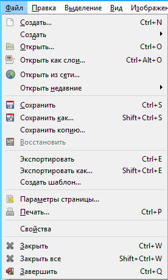

Сохранение изображения
По окончании работы над изображением необходимо сохранить все произведенные изменения до следующего раза или в качестве готового продукта.
Для этого в выпадающем меню Файл присутствуют четыре варианта опций сохранения: Сохранить, Сохранить как, Сохранить копию, Сохранить как шаблон.
Сохранить позволяет сохранить все произведенные изменения в изображении. Если вы сохраняете изображение, которое предварительно было открыто, а не создано, то после нажатия на кнопку Сохранить будет просто дописан исходный открытый файл, т. е. вам практически не придется задавать каких-либо дополнительных параметров (кроме, например, значения параметра качества в некоторых отдельных случаях). Если же вы применяете ее к вновь созданному файлу, то необходимо будет сначала сообщить программе адрес, имя и формат сохраняемого созданного файла в специальном окне. После использования этой опции будет создан новый файл.
Сохранить как — эта опция также позволяет записать все производимые изменения, но, в отличие от предыдущей, она во всех случаях создает новый файл, а не дописывает уже имеющийся. Например: вы открыли какое-либо изображение, произвели в нем определенные изменения, преобразили его, а затем хотите сохранить и оригинал до обработки, и обработанное изображение (оба варианта). В таком случае вам следует выбрать пункт Сохранить как и тем самым создать новый файл, содержащий произведенные изменения. Файл- оригинал при этом останется незатронутым. В результате у вас будут два файла: оригинал изображения и обработанный вариант.
Экспортировать как - опция позволяет преобразовать формат файла.
Сохранить копию — опция, позволяющая как бы «сделать снимок» текущего состояние редактируемого изображения. Вы можете сохранять внешний вид редактируемого изображения на разных стадиях преобразования.
Сохранить как шаблон — опция, позволяющая сохранить текущее изображение в качестве шаблона. При выборе данного пункта появляется окно ввода имени вновь создаваемого шаблона. В дальнейшем данный шаблон будет отображаться в общем списке шаблонов.
Совет
Применяя опции создания, открытия и сохранения изображений, весьма удобно использовать специальные «горячие клавиши». Так, для создания нового изображения применяется сочетание Ctrl+N, для открытия — Ctrl+O, а для сохранения изображения — Ctrl+S.